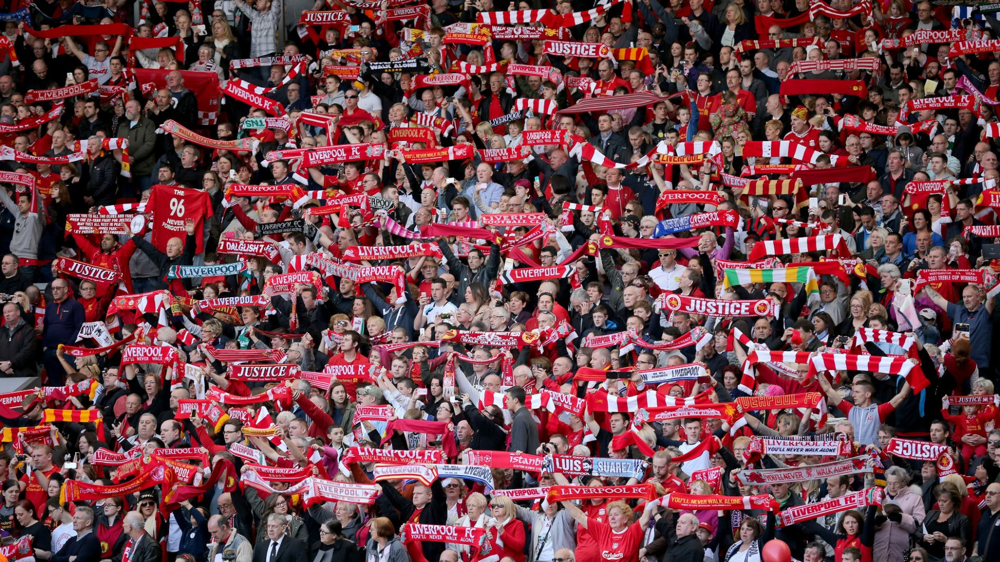

Doświadcz magii Anfield i niepowtarzalnej atmosfery meczów Liverpool F.C. 🌍⚽
Anfield Road to ikoniczny stadion piłkarski w Liverpoolu, w Anglii. Jest domem drużyny Liverpool FC i jednym z najbardziej znanych stadionów na świecie. Stadion został otwarty w 1884 roku i od tamtego czasu był świadkiem wielu historycznych wydarzeń piłkarskich. Atmosfera na Anfield jest jedyna w swoim rodzaju, zwłaszcza podczas hymnu "You'll Never Walk Alone".
Każdy mecz na Anfield zaczyna się od odśpiewania hymnu przez wszystkich kibiców. Posłuchajcie tej porywającej serca kibiców pieśni:
Atmosfera, w momencie gdy cały stadion stoi i śpiewa hymn jest wręcz niepowtarzalna. Często zdarza się, że nawet po zakończeniu hymnu kibice dalej głośno śpiewają „You'll Never Walk Alone”.😮💨
Film pokazujący wyjątkową atmosferę na Anfield podczas meczu:
| Element | Koszt (PLN) |
|---|---|
| Przelot do Liverpoolu | 1200 zł |
| Nocleg (2 noce) | 800 zł |
| Bilet na mecz | 600 zł |
| Wyżywienie | 300 zł |
| Łączny koszt | 2900 zł |